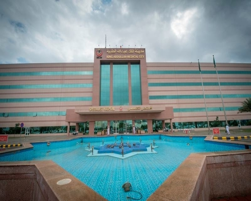

1-Purchasing Directorate
The services provided: - Purchase and enter copies of bids and submit offers and object to tenders and referrals. Required documents: - The concerned institutions should follow the advertisements in the daily newspapers issued by the General Supplies Department. Where the citizen must go: - General Supplies Department, and the Procurement Directorate is not related to these procedures Duration of service: - Immediately from the date set for the announcement
_______________________________________________________________
2-Restoration of guarantees of all kinds
The required documents :- Submit a subpoena signed by the authorized signatory in the establishment and the official establishment's seal - Supply of all referred materials Where the citizen must go: - Purchasing Directorate / Procurement Department to prepare the release letter addressed to the General Director of General Supplies. Completion period: - One day from the date of the summons, after which responsibility is transferred to General Supplies Department.
_______________________________________________________________
3-Local purchases
The required documents :- The concerned institutions should monitor the local newspapers Attendance of the authorized signatory with the official ring for purposes of notifying purchase orders Where the citizen must go: - Directorate of Procurement / Procurement Section Completion period: - The completion of the local purchase decision within a week of opening offers
________________________________________________________________
4-Reviews of invoices of all kinds

The required documents :- There is no need to review it Duration of service: - Sent daily by mail to the Directorate of Finance and Accounting and send checks directly to the institution concerned from the Accounting Directorate.
5-Checking and preparing medical prescriptions spent at the expense of health insurance from public pharmacies
The required documents :, - Write the price of each medicine next to it on the prescription - Numbering the recipes sequentially as they appear in the claim table Prepare a salary claim schedule Each prescription must bear the name of the drug after its removal with the stamp of the official price of the medicine package dispensed to the patient. Where the citizen must go: - Directorate of Procurement / Procurement Section Completion period: - From one hour to one day since the date of the submission of the claim, the responsibility is then transferred to the Health Insurance Directorate to complete the procedures for collecting the value.
_________________________________________________________________
6-Providing medicines and supplies not available in the Ministry's hospitals and the University Hospital for citizens
The required documents :- - A government medical prescription issued by the university hospital, signed with the official seal A cover letter from the General Directorate of Health Insurance to purchase the required material - Review the Directorate of Supply to indicate the lack of material in its warehouses. Where the citizen must go: Procurement Section Completion period: One to ten hours depends on the early presence of the citizen and the cooperation of the private sector in supplying the material, if requested.
__________________________________________________________________
7-Procedures to report an emergency in a private hospital: -
• Notification is made within 24 hours of the patient entering the hospital according to the instructions for health insurance.• The patient's relatives bring copies of and with the original documents: - Personal identification
• The patient's white card
• Health insurance card
• The patient’s relatives prepare a medical report from the treating physician or hospital and carry the hospital seal, explaining:
• Name and age of the patient
• Date of entry and time of entry
Type of disease and the reason for admission
8-Environmental Health
1-Olive presses
Required documents : A letter from His Excellency the Minister of Agriculture directly specifying the location of the winepress Completion period: directly Measures : Express an opinion on the health and environmental requirements in licensing olive presses so that the citizen can obtain final approval from the Ministry of Agriculture.___________________________________________________________________
2-Swimming pools
Requireddocuments: none Completion period: directly Measures : Providing the citizen with health requirements for the establishment of swimming pools___________________________________________________________________
3-Establishing factories
Requireddocuments: none Completion period: directly Measures : Providing the citizen with the health requirements he must abide by according to the industry sectorHospitals
• If the patient is in an emergency situation, he can refer to the emergency department directly
Patient who is first attending specialty clinics:
The required documents :
It must be transferred from a health center
• To have with him the white treatment card issued by the patient's health center
• If he is a health insurer, he must bring a health insurance card
• The sick citizen goes to the inquiries and opens a file
• The patient pays the fees to the accountant and according to the system
• The patient is transferred from the files to the competent clinics
• The patient is given an appointment to see a specialist or to be treated directly
The patient can enter it if:
• An emergency referral
• From outpatient clinics
In both matters, a file is opened directly to the patient and the file is sent to the accounting department for registration and numbering, and then the accountant sends the file to the department with the patient so that the signature of the section clerk and the nurse in the department is taken to receive the patient and then the department takes the signature of the patient or his representative to make any surgical intervention and the patient is treated Inside the hospital until the exit
After the prescription was written by the doctor, he was presented to the pharmacy
The pharmacist works on: -
• Pricing the medicine
• Writing a phrase that is not available for drugs that are not available
• Write alternative therapy if available
• Register the medicine spent on the health insurance account and signed by the pharmacist after showing the white card, file and health insurance card.
• See the doctor if there are alternative medicines to correct the prescription
• Pay the sums due on the recipe after its pricing in accounting after showing the necessary card for that as the treatment card for the capable or the two treatment cards and health insurance for the beneficiary or the subscriber.
• returns after paying the fees due to the pharmacy and treatment is spent for him
